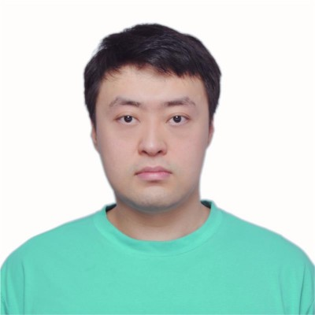
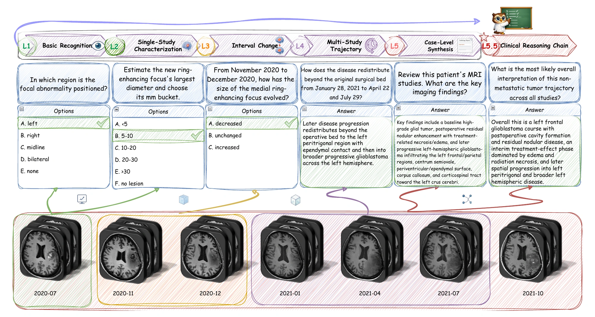
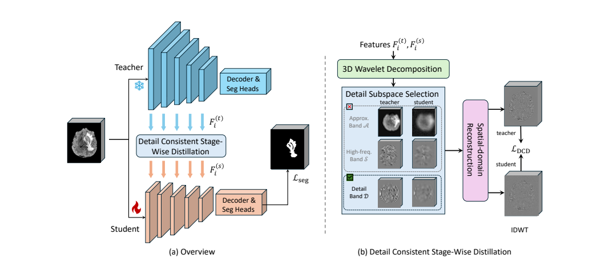
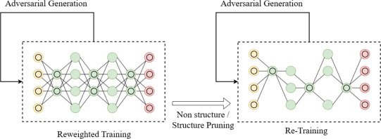
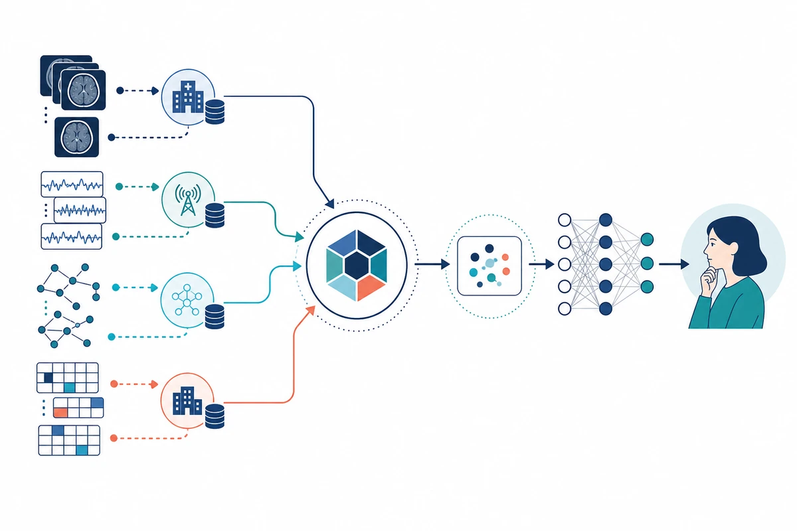

Mengchen Fan
Ph.D. Candidate · University of Alabama at Birmingham
I am a Ph.D. candidate in Computer Science at the University of
Alabama at Birmingham. My research develops AI methodologies for
learning from complex and heterogeneous data.
I focus on efficient and reliable models, including model compression
and adaptation, multimodal data fusion, longitudinal-data reasoning,
and federated and decentralized learning. Medical imaging is a
primary application area for my research.
Research Interests
Distributed Learning
Federated and decentralized learning under client heterogeneity.
Medical AI
Efficient and interpretable models for imaging and clinical data.
Multimodal Fusion
Reliable fusion of images, graphs, and medical data.
Model Efficiency
Knowledge distillation, pruning, compression, and optimization.
Teaching interests: Machine Learning, Deep Learning,
Programming, and Algorithms.
News
2026
-
[September] BrainTRACE was accepted to NeurIPS 2026.
-
[May] Our work on detail-consistent stage-wise
distillation was accepted to MICCAI 2026 as an Early Accept
(top 9%) and selected for a Spotlight presentation.
-
Our work on bandwidth-constrained multimodal fusion was accepted
to IEEE IRI 2026.
2025
-
Our DNN weight compression framework was published in
Intelligent Systems with Applications.
-
PFedDST was presented at the IEEE International Joint Conference
on Neural Networks.

2026
BrainTRACE: Tracing Longitudinal, Multimodal, and Volumetric Evidence in Brain MRI Clinical Reasoning
Qizhen Lan†, Mengchen Fan†, Hang Zhang, Jingwei Duan, Moule Lin, Jialin Chen, Baocheng Geng, Xiaoqian Jiang
NeurIPS 2026
Co-first Author
† Equal contribution
A benchmark with 7,273 scored VQA instances for evaluating how vision-language models integrate longitudinal, multi-sequence, and volumetric brain MRI evidence for clinical reasoning.

2026
Mengchen Fan, Baocheng Geng, Xi Xiao, Tianyang Wang, Siyuan Mei, Pulin Che, Xiaoqian Jiang, Qizhen Lan
MICCAI 2026
Early Accept · Spotlight Presentation

2025
Mengchen Fan, Tianyun Zhang, Xiaolong Ma, Jiacheng Guo, Zheng Zhan, Shanglin Zhou, Minghai Qin, Fei Sun, Yen-Kuang Chen, Caiwen Ding, Makan Fardad, Yanzhi Wang
Intelligent Systems with Applications, 2025
First Author

Other Publications
2026
2025
2025
2025
Joseph Casey, Qianjiao Chen, Mengchen Fan, Baocheng Geng, Roman Shterenberg, Zhong Chen, Keren Li
Mathematics, 2025
2025
2024
2020
Jinju Qian, Zhichao Mo, Zhangquan Rao, Weibing Yue, Ke Wang, Mengchen Fan, Xiangyang Peng, Xiaofeng Pang, Lin Yi, Rui Wang
Chinese Patent CN106156888B, 2020
Manuscripts Submitted and Under Review
† Equal contribution
U.1
MedSTP: Preserving Subspace and Transition Evidence for Medical VQA Token Pruning
Mengchen Fan†, Qizhen Lan†, Xi Xiao, Lin Zhao, Liang He, Tianyang Wang, Xiaoqian Jiang, Pulin Che, Baocheng Geng
IEEE/CVF Winter Conference on Applications of Computer Vision (WACV), 2027 · Under review
U.2
CRAD: Class-Wise Reliability-Aware Distillation for Decentralized Heterogeneous Federated Learning
Baraa Bilbeisi†, Mengchen Fan†, Baocheng Geng, Qing Tian
IEEE/CVF Winter Conference on Applications of Computer Vision (WACV), 2027 · Under review
U.3
When Evidence Vanishes: Distilling Visual-Evidence Dependency in Medical Vision-Language Models
Qizhen Lan, Yiling Ma, Ruiqi Chen, Mengchen Fan, Xi Xiao, Lin Zhao, Liang He, Baocheng Geng, Pulin Che, Tianyang Wang, Xiaoqian Jiang
IEEE/CVF Winter Conference on Applications of Computer Vision (WACV), 2027 · Under review
U.4
Trust Is Not Enough: Influence Calibration for On-Policy Self-Distillation in Agentic RL
Qizhen Lan, Xi Xiao, Xiangchen Guan, Mengchen Fan, Moule Lin, Jung Im Choi, Lijing Zhu
AAAI Conference on Artificial Intelligence, 2027 · Under review
U.5
SIGMA: SIgnaling via Golgi Morphology Analysis for Pathway-State Classification
Mengchen Fan†, Xu Zhang†, Baocheng Geng, Pulin Che
Communications Biology, 2026 · Submitted
U.6
Machine Learning Classifies Subcellular Golgi Morphology from Imaging Flow Cytometry during Inflammatory Activation: An Exploratory Study
Xu Zhang†, Mengchen Fan†, Kim Seokoon, Qing Zhao, Brant Wagener, Baocheng Geng, Pulin Che
npj Imaging, 2026 · Submitted
U.7
Drug Repurposing from Single-Cell IPF Transcriptomes Identifies the HDAC Inhibitor Belinostat as an Antifibrotic Candidate
Xu Zhang, Mengchen Fan, Xinnan Li, Pulin Che
Respiratory Research, 2026 · Submitted
U.8
A Statistical Framework for Measuring Data Heterogeneity in Distributed Learning
Mengchen Fan, Roman Shterenberg, Keren Li
The Annals of Applied Statistics, 2025 · Under review
Education
2022 — Present
Ph.D. in Computer Science
University of Alabama at Birmingham · GPA 4.0 / 4.0 · Expected May 2027
Advisor: Baocheng Geng, Ph.D.
Dissertation Research (provisional): Medical AI for Longitudinal Imaging and Reasoning
2017 — 2019
M.S. in Computer Engineering
Syracuse University · GPA 3.867 / 4.0
2012 — 2016
B.S. in Electrical Engineering
North China Electric Power University
Teaching and Mentoring Experience
University of Alabama at Birmingham
Spring 2026
Natural Language Processing CS 662/762
Teaching Assistant · Guest Instructor
Spring 2026
Deep Learning CS 665/765
Teaching Assistant · Guest Instructor
Fall 2025
Computer Security CS 436/636/736
Teaching Assistant
Summer 2025
Mobile Application Development CS 422/522
Teaching Assistant
Spring 2025
Deep Learning CS 665/765
Teaching Assistant · Guest Instructor
Fall 2024
Foundations of Data Science CS 685
Teaching Assistant
Summer 2024
Mobile Application Development CS 422/522
Teaching Assistant
Spring 2024
Deep Learning CS 665/765
Teaching Assistant · Guest Instructor
Fall 2023
Machine Learning CS 667/767
Teaching Assistant
Summer 2023
Machine Learning CS 667/767
Teaching Assistant · Guest Instructor
2025 — 2026
Student Mentoring: Baraa Bilbeisi
Federated learning and knowledge distillation
2025 — 2026
Student Mentoring: Yifan Ying
Federated learning and token merging
Experience
Aug 2022 — Present
Doctoral Researcher in Computer Science
University of Alabama at Birmingham
- Developed region-aware distillation methods that produced lightweight 3D medical-image segmentation models.
- Developing longitudinal MRI/CT reasoning benchmarks and agent-based approaches toward report generation.
- Developed federated and decentralized learning methods for heterogeneous clients through personalized training and representative knowledge sharing.
- Outcomes: Nine peer-reviewed papers published or accepted, including seven first- or co-first-author papers. The MICCAI 2026 paper received an Early Accept decision (top 9% of 4,601 submissions) and was selected for a Spotlight presentation.
May — Aug 2026
Research Intern
Pulin Che Laboratory · UAB Heersink School of Medicine · Birmingham, AL
- Developed deep learning pipelines for ImageStreamX imaging flow cytometry to quantify pathway-specific Golgi morphology.
- Developed interpretable classifiers and validation methods for inflammatory activation, signaling-pathway identification, and generalization across species and unseen compounds.
- Outcomes: Three submitted manuscripts on Golgi morphology analysis, signaling-pathway identification, and drug repurposing.
Dec 2020 — Aug 2022
Java Full Stack Developer
Citi · Shanghai, China
- Developed and maintained a full-stack SMA platform for Basel IV operational-risk calculations using Java, Spring, Angular, and Oracle; mentored new team members.
Grant and Proposal Contributions
2025
UAB REINVENT Seed Funding Program ($50,000)
Machine Learning-Based Early Detection of Acute Respiratory Distress Syndrome · Funded
Proposal Contributor; developed the machine-learning methodology and contributed to proposal writing. PI: Pulin Che.
Invited Talk
June 10, 2024
Distributed Model Pruning and Data Fusion
2024 WNAR/IMS/Graybill Annual Meeting · Colorado State University · Fort Collins, CO
Technical Skills
- Programming and Tools
- Python, C++, Java, SQL, JavaScript; PyTorch, Spring, Angular, and Oracle
Academic Service
- Conference Reviewer
- AAAI (2026, 2027); MICCAI (2026); IJCNN (2025, 2027); ICME (2025); BioKDD (2025, External Reviewer)
- Journal Reviewer
- IEEE/ACM Transactions on Computational Biology and Bioinformatics (2024–2025); BMJ Open Ophthalmology (2025); Journal of Clinical Pharmacy and Therapeutics (2025); Frontiers in Genetics (2025); Frontiers in Nutrition (2025); Discover Oncology (2025); Journal of Visualized Experiments (JoVE) (2026)